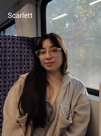
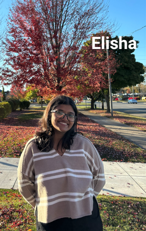

Teachers and Grading#
Lecture#
Meetings |
Location |
||
|---|---|---|---|
Monday 12:40-13:30 |
Wednesday 12:40-13:30 |
Friday 12:40-13:30 |
STEM 1202 and Zoom |
IMPORTANT
Monday and Wednesday’s class will be lecture-based; Friday’s classes will be homework-based workshops. We will work the more challenging exercises together in class on Friday.
The lecture portion of the course will be streamed and recorded via Zoom. Only lecture will be recorded.
You are encouraged to attend in person, but if you are unable to do so, you can join the lecture via this Zoom Link.
Professor#

Instructor |
Office |
|
|---|---|---|
Danny Caballero (he/they) |
Office Hours |
|---|
Wednesday 16:00-17:00; Fridays 10:00-12:00 and 15:00-16:00 in the Strosacker Center (1248 BPS) or schedule me |
Danny will lead the course, design the homework and exams, and assign final grades. Danny is also responsible for the course content, so if you have any suggestions for how to improve the course, please let him know. Danny will also grade your midterm and final projects.
Graduate Teaching Assistant#

Homework Grader |
|
|---|---|
Scarlett Rebolledo Caceres (she/her) |
Scarlett will be grading your homework assignments. She will provide overall feedback on the things that students struggled with on homework sets which will be addressed in class. If you have questions about your homework grade, please contact Scarlett directly.
Undergraduate Learning Assistants#

Learning Assistant |
Office Hours |
Location |
|
|---|---|---|---|
Elisha Alemao (she/her) |
Tuesday and Thursday 17:00-18:00 in the Strosacker Center (1248 BPS) |
Physics Help Room |
Elisha will be helping you in class and during office hours. She has taken this course previously and has been selected because she is passionate about helping you learn classical mechanics. She is an incredible resource for you.
Getting Help#
PHY 321 is a very challenging course. It introduces many new concepts and mathematical techniques that may be unfamiliar to you. It is important that you seek help when you need it. We are here to help support your understanding. There are many resources available to you:
Office hours: You are encouraged to attend office hours to get help with homework, projects, or any other questions you have about the course. You can also schedule a meeting with Danny.
Your classmates Physics is a social enterprise. We cannot progress in our understanding of science alone; that simply doesn’t happen. We need to work together to make progress. You are encouraged to work together on homework, midterms, and the final.
Grading and Dates#
Grading scale#
There are no curves in this course. The grading scale is as follows.
4.0 |
3.5 |
3.0 |
2.5 |
2.0 |
1.5 |
1.0 |
|---|---|---|---|---|---|---|
90% |
80% |
70% |
65% |
60% |
55% |
50% |
Course Activities#
Activity |
Percentage of total score |
|---|---|
Homeworks, 9 in total and due Fridays the week after |
15% |
Individual Reflections, weekly and HW |
5% |
First Midterm Project, due Friday Feb 28 |
25% |
Second Midterm Project, due Friday April 11 |
25% |
Final Project, due Friday May 02 |
30% |
Homework (15%)#
Homework is exceedingly important for developing an understanding of the course material, not to mention building skills in complex physical and mathematical problem solving. There will be a homework assignment due nearly every week on Fridays at 11:59pm ET via Gradescope. Late homework will not be accepted once solutions are posted - which will be 8:00am ET on the following Monday.
Coarse Grading Scale#
Because of the large number of students in the course, homework grading will be coarsely grained. Scarlett will provide overall feedback on the things that students struggled with on homework sets; that will be shared in class. The homeworks will be graded on a 3 point scale: 3 points for a complete and correct solution, 2 points for a mostly complete/slightly incorrect solution, 1 point for an incorrect/incomplete solution, and 0 for a blank solution.
This coarse grading scale works for each problem, regardless of their value. For example, if you have a problem worth 5 points and have a mostly complete solution you will earn \(5 (\dfrac{2}{3}) = 3.33\) of the possible 5 points for that problem. If you have questions about your homework grade, please contact Scarlett directly.
Individual Reflections (5%)#
For each homework assignment, you will be asked to individually reflect on your own experience with the assignment. The individual reflection will be due with each homework assignment (e.g. every other Friday at 11:59pm ET) via the D2L Assignments page. Late reflections will not be accepted once solutions are posted - which will be 8:00am ET on Monday. The prompts are designed to encourage you to think critically about your learning process and identify areas for growth. In this reflection, you should address the following questions:
Prompts for Reflections#
If you worked as a group (2-3 people):
What was the most challenging part of this assignment, and how did you address it? This could be related to the content of the assignment, your group’s dynamics, etc.
Thinking about your role in the group, what did you contribute to your team’s effort?
Identify 1-2 specific positive interactions and 1-2 specific and actionable areas of improvement. Meanness and generalities are not constructive. Writing “no concerns, everything was great” is also not helpful. Think of ways your team could have been even better.
If you worked individually:
What was the most challenging part of this assignment, and how did you address it? This could be related to the content of the assignment, your learning style, etc.
What did you learn about your own strengths through engaging with this assignment?
What would you do differently if you were to approach this assignment again and why?
Pre-class Reflections#
Before each class week, starting with week 2, you will be asked to reflect on the following questions based on your engagement with the pre-class materials. These reflections will be due on the Sunday of each week at 11:59pm ET via the D2L Assignments page. The questions are below and we expect a few sentences in response to each for full credit.
What was the most challenging part of the pre-class materials, and how did you address it? This could be related to the content of the pre-class materials, your learning style, etc.
What did you learn about your own strengths through engaging with the pre-class materials?
What would you do differently if you were to approach the pre-class materials again and why?
What questions do you have about the pre-class materials that you would like to discuss in class?
Midterm Projects (25%)#
The midterm projects are an individual effort to showcase your learning. They will cover topics from prior homework, lectures, and readings. The midterm projects will be due via the D2L Assignments page. It is likely that some of the problems might require a little research on your own or might be slightly beyond what we have done in class and in homework. The midterm is meant to be challenging, but it should also be a good place to learn more about the topics covered in the course. You are encouraged to use the textbook, notes, and other resources when solving the midterms and can ask any of the teaching staff for help.
Final Project (30%)#
The final project is designed for you to show your understanding of the various physics and mathematical topics we have covered during the semester. The final project will be due by Friday, May 2nd via the D2L Assignments page. For the final exam project, you will choose a physical system to analyze fully. You will prepare a narrative report (as a Jupyter notebook) that shows your work and explains your results. By the end of the semester, you will hopefully feel confident in your ability to choose a system to study. However, if you are unsure, please reach out to Danny for guidance.
You can work in groups (2-3 people) OR by yourself. The expectation is that if you work together on the project, you will turn in your own work. In other words, the final project should be turned in by each student individually and should represent their own work.
Extra Credit Opportunities#
Using iClickers during Class#
During class, clicker questions will be used in class to gauge your understanding of a topic or concept. I do not penalize you for not knowing the correct answer. I prefer to know what you know in-the-moment. Thus, clickers are pure extra credit: the total number of clicker questions you answer divided by the total number asked this term earns you up to 1% extra credit toward your overall homework grade. You can access the iClicker app on a smartphone, tablet or laptop. To get your iClicker set up, see the instructions on D2L.
Attending the Department of Physics & Astronomy Seminars and/or Colloquia#
Attending scientific talks is an important practice that many physicists engage in. This extra credit opportunity will help you develop your scientific knowledge and writing. You can earn up to 5 extra credit points on a homework assignment. To earn these points, you must (1) attend a MSU research talk, (2) summarize the talk using at least 150 words, and (3) turn in your summary along with your homework. You can find the list of talks on the MSU Physics and Astronomy Seminars and Colloquia website and are encouraged to seek out other opportunities through the Society for Physics Students (SPS) or Astronomy Club.
Completing “Challenge Assignments” on D2L#
On D2L you will find a series of professionalization “challenges” posted as Discussion Board topics. These challenges are designed to aid you in developing a set of skills as you continue to advance in your career. None of these challenges are required assignments, but they have the potential to support your professional development. If you do choose to complete one or more challenges, you will have the opportunity to earn 0.5% extra credit points for each completed challenge toward your final grade. The maximum extra credit that can be earned is 2%.
Midterm Extra Credit#
For each midterm, there will be similar extra credit opportunities. These will be announced closer to the midterm dates, and they will be worth up to 10 additional points on the midterm.
Collaboration Policy#
I strongly encourage you to work with your classmates on homework, projects, and the final. You are also encouraged to seek help from the professor, the GTA, and the learning assistants. However, you must write up your solutions independently. Copying someone else’s work is a violation of the Spartan Code of Honor Academic Pledge. This applies to all graded work in the course, including homework, projects, and the final. If you have any questions about this policy, please ask me.
Generative AI Policy#
This policy on collaboration extends to generative AI. You are welcome to use generative AI tools (e.g. ChatGPT, Dall-e, etc.) in this class as doing so aligns with the course learning goals. These tools can be useful in gathering information, troubleshooting code, and developing potential directions. However, you are responsible for the information you submit based on an AI query (for instance, that it does not violate intellectual property laws, or contain misinformation or unethical content). Your use of AI tools must be properly documented and cited in order to stay within university policies on academic integrity and the Spartan Code of Honor Academic Pledge.
We will develop a policy for documenting the use of generative AI tools in this course together. This policy will be shared with you in class and will be available on the course website.